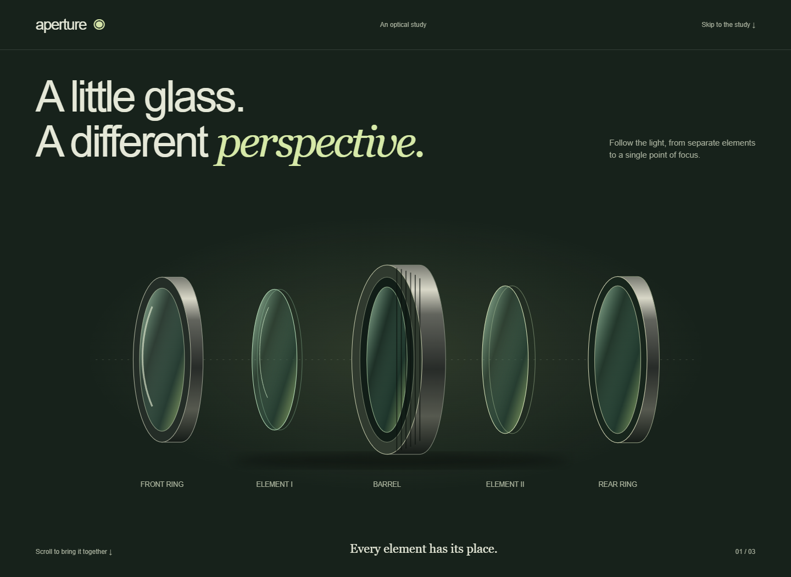
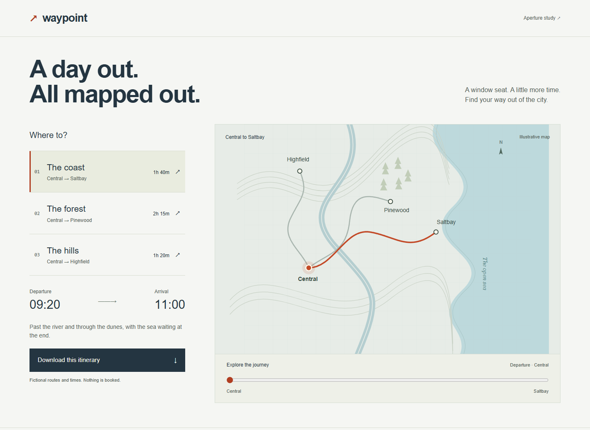

Motion with
something to say.
A continuous optical study and a responsive journey planner. Two ways to connect movement to meaning.

Aperture
Follow the elements. Bring the light into focus.

Waypoint
Choose a route. Explore the journey. Take a plan.